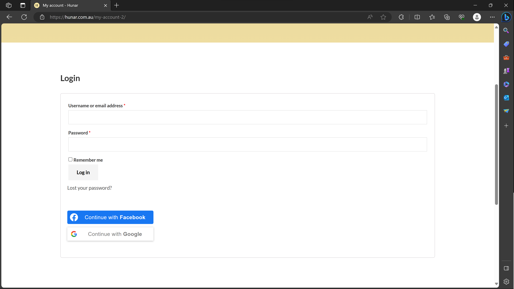

A website to sell handmade art pieces
Hunar is a dynamic eCommerce website that I developed using WordPress as the foundation. It incorporates a meticulously selected plugins and leverages the power of WooCommerce to create a seamless and user-friendly online shopping experience. To ensure secure and convenient payment options, I integrated multiple payment gateways, including bank gateway, PayPal, and Afterpay.

Key Features:
Responsive Design: Hunar boasts a fully responsive design, ensuring an optimal viewing experience on various devices, including mobile phones and tablets. This responsive design enhances user engagement and accessibility.
Development: During the development phase, the conceptualized design and features were transformed into a fully
functional and user-friendly online platform. In order to build the architecture and design of the website,
I tailored the selected WordPress theme to align perfectly with Hunar's unique brand identity and user experience objectives.
Elementor played a pivotal role in this process, allowing for flexible and creative customization of the website's layout,
structure, and visual elements.
For e-commerce functionality WooCommerce was integrated to provide a seamless and feature-rich
online shopping experience.
This encompassed product catalogue setup, shopping cart functionality, secure checkout processes, and inventory management.
For functionality rigorous testing was conducted to ensure all features and functionalities worked as intended, delivering a
glitch-free and user-friendly experience.
User Authentication: To simplify the user registration and login process, I integrated Google and Facebook APIs. Users can now easily sign in with their Google or Facebook accounts, reducing friction during their shopping journey.
Payment Gateways: Customers can choose from a variety of payment options, including bank gateway, PayPal, and Afterpay. This diversity allows for a smooth and secure checkout process, increasing customer trust and satisfaction.
Deploymant Process: I directed the domain name to the host's servers and carefully migrated all the files and databases to ensure a seamless transition. The final step was to integrate security measures and optimize the website's performance.